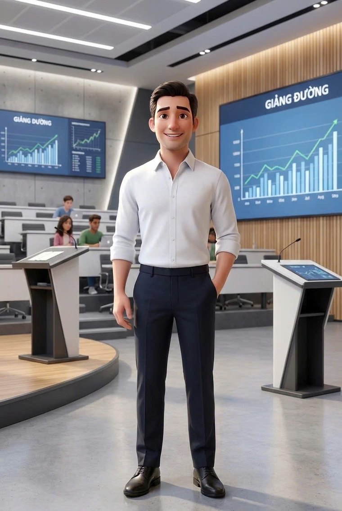

Học kinh doanh
bằng mô phỏng
from Vietnam to the world.
Mô phỏng giải thích được · Học tập dựa trên nghiên cứu · Phản tư có AI hỗ trợ


Phân tích tổng hợp
r = .31
Bằng chứng học tập
Trước → Sau
Quốc tế hoá
Thị trường → Thâm nhập
Cố vấn AI
Giải thích · Phản tư
Bắt đầu từ đâu
Bốn cách vào
🎮
01 — BizOn Core
Bật Nghiệp
Điều hành doanh nghiệp qua sáu vòng trên bản đồ Việt Nam.
🛂
02 — BizOn International
Hộ Chiếu Thương Hiệu
Đưa thương hiệu Việt ra sáu thị trường, quyết định trong sương mù thông tin.
🔬
03 — BizOn Lab
IE Lab
Thử lý thuyết quốc tế hoá bằng số liệu mô phỏng.
🕹️
04 — BizOn Arcade
Trung tâm trò chơi
Luyện nhanh từng kỹ năng riêng lẻ.
Bật công tắc âm thanh ở góc dưới rồi rê chuột lên từng thẻ: mỗi cổng có một câu nhạc riêng, cắt từ chính ca khúc của màn đó.
Bằng chứng trước quảng cáo
Việc học kiểm tra được
Engine giải thích được
Logic mô phỏng là xác định. Cùng một bộ quyết định luôn cho cùng một kết quả — chấm điểm và nghiên cứu mới tái lập được.
Quyết định quan sát được
Mỗi nước đi chiến lược để lại dấu vết: giá, sản lượng, marketing, thâm nhập thị trường — đều ghi lại theo vòng.
Bằng chứng học tập
Đo trước–sau · rubric bốn mức · dữ liệu lớp học thật, kèm giới hạn diễn giải công bố công khai.
Đây là bằng chứng ban đầu từ một học phần, hồi cứu, không có nhóm đối chứng và chưa tách được tác động của mô phỏng khỏi giảng dạy nói chung. Chúng tôi công bố cả giới hạn đó.
Chuỗi mắt xích
Từ lý thuyết tới quyết định
Đây là thứ một game thương mại thông thường không có: mỗi mắt xích đều truy được về nguồn.
01
Nghiên cứu
Tài liệu về quốc tế hoá và khởi nghiệp
02
Mô hình
Giả định được viết ra rõ ràng
03
Mô phỏng
Engine xác định, tham số công khai
04
Quyết định
Hành động của người học
05
Kết quả
Báo cáo từng vòng, tính lại được
06
Phản tư
Cố vấn AI hỏi lại, không chấm thay
07
Bằng chứng
Sản phẩm học tập quan sát được
Về BizOn
Đội ngũ sáng lập

Đỗ Thùy Hương
Founder & Project Lead
Nghiên cứu sinh Tiến sĩ Quản trị kinh doanh · Đại học Cần Thơ
Nghiên cứu chiến lược quốc tế hoá và hiệu quả doanh nghiệp, chuyên về phân tích tổng hợp và nghiên cứu định lượng. Chủ nhiệm dự án và tác giả phát triển chính của hệ sinh thái BizOn; thiết kế nhân vật và trải nghiệm cố vấn Lumina AI.

PGS.TS. Phan Anh Tú
Co-founder & Chief Academic Advisor
Phó hiệu trưởng Trường Kinh tế · Đại học Cần Thơ
Chuyên gia khởi nghiệp, đổi mới sáng tạo và khởi nghiệp quốc tế. Dẫn dắt định hướng học thuật của BizOn, chuyển hoá nghiên cứu thành mô phỏng kinh doanh ứng dụng AI và trải nghiệm học tập theo dự án.
Lumina là nhân vật do Đỗ Thùy Hương thiết kế, vừa đóng vai cố vấn học tập AI trong game vừa là hình đại diện của chị trong hệ sinh thái. Victor Lâm ở phần đầu trang là nhân vật hư cấu chuyên trách quốc tế hoá. Cả hai đều là tạo hình 3D, không phải ảnh chụp.